Serial Communication (UART)¶
Why serial communication?¶
A microcontroller talks to a computer to
-
debug: “where is my program now?”
-
display sensor values;
-
check the program state;
-
receive commands;
-
communicate with another device: GPS, another microcontroller, a modem.
Serial vs UART
-
Serial is the concept: bits are sent one after the other over one wire.
-
UART (Universal Asynchronous Receiver/Transmitter) is the hardware and protocol that does it.
-
I2C and SPI are also serial, but we call them by their own names.
Asynchronous
There is no clock wire: both sides must agree on the speed in advance (the baud rate).
Sources: Embedded Programming, lectures 1–6; UART
The UART frame: one byte on the wire¶
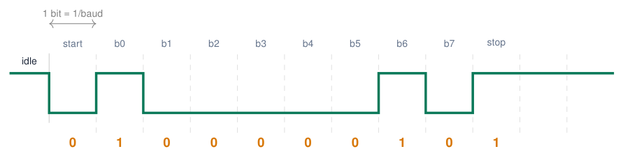
-
Line idles HIGH. A start bit (LOW) wakes up the receiver.
-
8 data bits, least significant bit first: here
'A'= 65 =0x41= 0100 0001. -
A stop bit (HIGH) ends the frame. “8N1” = 8 data bits, no parity, 1 stop bit.
Baud rate math
115 200 baud \(\Rightarrow\) 1 bit \(\approx\) 8.7 μs.
1 byte = 10 bits \(\Rightarrow\) \(\approx\) 11 500 bytes/s.
9600 baud \(\Rightarrow\) only 960 bytes/s.
Sources: UART
RX, TX and the UARTs of the ESP32¶
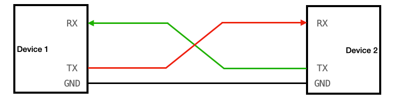
-
TX (transmit) of one side goes to RX (receive) of the other: crossed.
-
A common GND is required: voltages are measured against it.
-
Both sides must use the same voltage level (3.3 V on the ESP32).
GPIO matrix
Any UART can be routed to other pins: Serial1.begin(9600, SERIAL_8N1, 25, 26);
Sources: Figure: lecture 2 Embedded Programming, lectures 1–6
How many UARTs do we have, and which ones?¶
The classic ESP32 has three independent hardware UART controllers.
Three controllers, usually two additional links
Keep UART0 for USB debugging; UART1 and UART2 can serve two other devices. HardwareSerial sensor(2) names UART2, not a fourth UART. Counts and available pins differ between ESP32-family chips and modules.
Sources: Classic ESP32 UART count and Arduino objects ESP32 Series Datasheet; Arduino ESP32: Serial (UART)
UART number and pin number are different choices¶
Three serial paths on one board
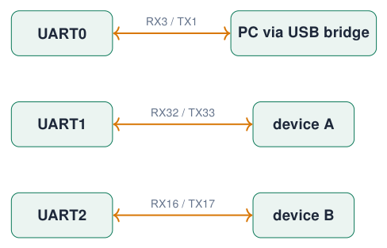
-
The GPIO matrix routes UART signals to selected suitable pins.
-
In
begin(baud, format, RX, TX), the last two numbers choose those pins. -
The USB socket on this DevKit reaches UART0 through a bridge; it is not a fourth UART.
-
Cross TX to RX and connect a common ground; use compatible 3.3 V logic.
Avoid assumptions from old tutorials
GPIO9/10 are connected to flash on WROOM-32. Do not reuse them for UART1. Choose pins explicitly instead of relying on an example’s defaults.
Sources: UART routing and module pin restrictions ESP32-WROOM-32 Datasheet, Version 3.8; Arduino ESP32: Serial (UART); Espressif: GPIO Matrix and Pin Mux
Explicit setup: USB debug plus two external UARTs¶
void setup() {
Serial.begin(115200); // UART0 -> USB bridge
Serial1.begin(9600, SERIAL_8N1, 32, 33);
Serial2.begin(115200, SERIAL_8N1, 16, 17);
Serial.println("Debug on UART0");
Serial1.println("Hello device A");
Serial2.println("Hello device B");
}
void loop() {
// Each port has its own available/read/write.
}
-
Serial1: RX32 and TX33 are deliberate choices. -
Serial2: RX16 and TX17 match the course-board terminal. -
The baud rates of the three UARTs can differ; each link’s two ends must agree.
Installed core 3.3.11
Its generic ESP32 defaults are UART1 RX26/TX27 and UART2 RX4/TX25. Older examples often use other defaults. Explicit pin arguments keep this sketch tied to our wiring.
Sources: API and installed core 3.3.11 HardwareSerial.h Arduino ESP32: Serial (UART); Arduino ESP32 Core 3.3.11: HardwareSerial.h
The most used Serial functions¶
Sources: Arduino Language Reference
r and n: a lesson from the typewriter¶
Try simulation: ASCII characters
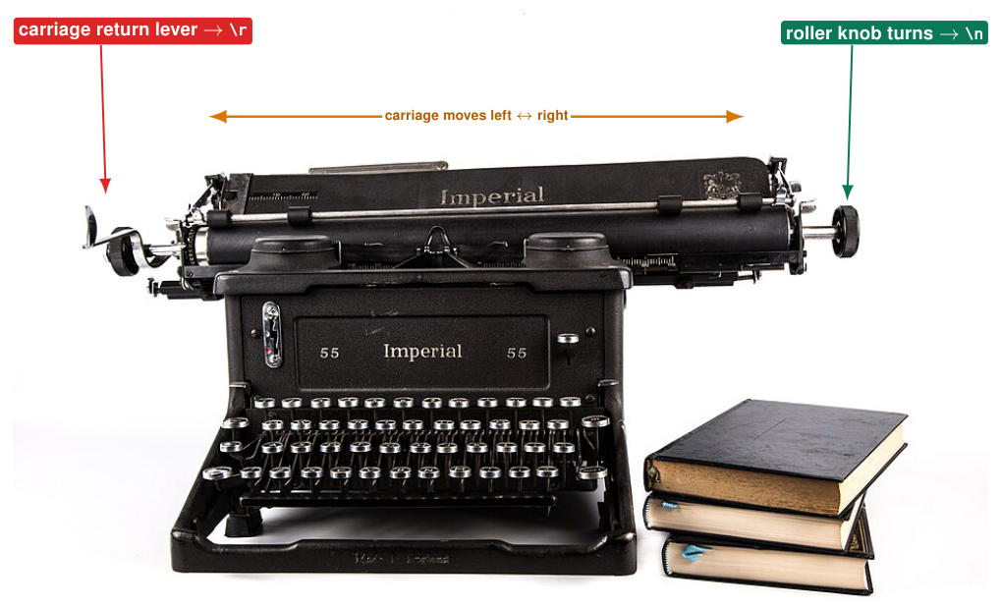
Finishing a line took two movements
-
Carriage return: push the carriage back to the left margin.
\(\Rightarrow\)'\ r', CR, ASCII 13 -
Line feed: turn the roller one line up, so you do not type over the old line.
\(\Rightarrow\)'\ n', LF, ASCII 10 -
Teleprinters (the first serial terminals) copied the typewriter: two separate control characters.
-
They still travel over every UART today.
So Serial.println('Hi') sends 4 bytes
'H' 72 'i' 105 '\ r' 13 '\ n' 10
Sources: Photo: Dr. Luke, Imperial typewriter, CC0, via Wikimedia Commons
Line endings in practice¶
| Who | Ends a line with |
|---|---|
Serial.println() |
\ r\ n (CR + LF) |
| Windows text files | \ r\ n |
| Linux, macOS | \ n |
| Classic Mac OS (old) | \ r |
Serial Monitor: line ending setting
-
No Line Ending: only what you typed
-
New Line: adds
\ n -
Carriage Return: adds
\ r -
Both NL & CR: adds
\ r\ n
Why trim()?
With Both NL & CR, readStringUntil('\ n') returns "ON\ r": it is not equal to "ON". trim() removes the invisible \ r.
// Shows every byte you send from the
// Serial Monitor: try every line ending!
void setup() {
Serial.begin(115200);
}
void loop() {
while (Serial.available()) {
int b = Serial.read();
Serial.printf("%3d 0x%02X %c\n",
b, b, b >= 32 ? b : '.');
}
}
Typing Hi with Both NL & CR prints:
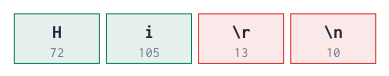
Example: commands from the Serial Monitor¶
const int LED_GREEN = 22;
void setup() {
Serial.begin(115200);
pinMode(LED_GREEN, OUTPUT);
Serial.println("Type ON or OFF");
}
void loop() {
if (Serial.available()) {
String cmd = Serial.readStringUntil('\n');
cmd.trim(); // remove \r and spaces
cmd.toUpperCase(); // on = ON
if (cmd == "ON") {
digitalWrite(LED_GREEN, HIGH);
Serial.println("LED on");
} else if (cmd == "OFF") {
digitalWrite(LED_GREEN, LOW);
Serial.println("LED off");
} else {
Serial.println("Unknown command: " + cmd);
}
}
}
-
Is there data?
available() -
Read one line up to
'\ n'. -
Clean it:
trim(),toUpperCase(). -
Compare and act:
if / else if. -
Always answer: the user sees what happened.
Serial Monitor setting
Set the line ending to Newline, otherwise readStringUntil('\ n') waits for its timeout (1 s).
Example: plotting several values¶
const int POT = 36;
void setup() { Serial.begin(115200); }
void loop() {
int raw = analogRead(POT);
float volts = raw * 3.3 / 4095.0;
int percent = map(raw, 0, 4095, 0, 100);
// label:value pairs, comma separated
Serial.printf("raw:%d,percent:%d,mV:%d\n",
raw, percent, (int)(volts * 1000));
delay(50);
}
-
Open Tools \(\rightarrow\) Serial Plotter.
-
Each
label:valuebecomes a line with a legend. -
One complete set per line, ending with
\ n. -
Do not print other text at the same time: it confuses the plotter.
Debugging with graphs
Noise, spikes, slow drift and bouncing buttons are much easier to see in a graph than in numbers.
What does SERIAL_8N1 mean?¶
Serial2.begin(9600, SERIAL_8N1, 16, 17);
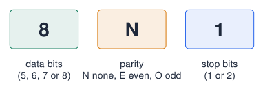
-
The frame format: how each byte is packed on the wire, besides the baud rate.
-
Serial.begin(115200)usesSERIAL_8N1by default. -
Both devices must use the same format, exactly like the baud rate; otherwise you get garbage or framing errors.
Bits per byte
start (1) + data (8) + parity (0) + stop (1) = 10 bits.
9600 baud with 8N1 \(\Rightarrow\) 960 bytes/s; with 8E1 only 872 bytes/s.
Sources: UART; Arduino ESP32 Core Documentation
Parity: a simple error check¶
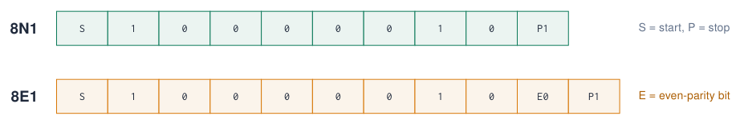
-
Even parity: the sender adds 1 bit so that the total number of 1s (data + parity) is even.
-
Odd parity: the total number of 1s is odd.
-
The receiver counts again: a mismatch means a bit was flipped by noise.
-
Detects one wrong bit, cannot correct it; two flipped bits go unnoticed.
| Char | Data bits | 1s | E bit |
|---|---|---|---|
'A' 0x41 |
0100 0001 | 2 | 0 |
'C' 0x43 |
0100 0011 | 3 | 1 |
'U' 0x55 |
0101 0101 | 4 | 0 |
In practice
Short cables on a board: SERIAL_8N1. Long, noisy industrial lines: parity (8E1) plus checksums in the message.
UART: talking to another device¶
// UART2 on GPIO16 (RX2) / GPIO17 (TX2)
void setup() {
Serial.begin(115200); // USB / PC
Serial2.begin(9600, SERIAL_8N1, 16, 17); // baud, frame, RX, TX
}
void loop() {
while (Serial2.available()) Serial.write(Serial2.read()); // device -> PC
while (Serial.available()) Serial2.write(Serial.read()); // PC -> device
}
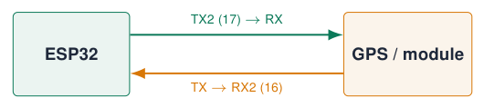
-
3 UARTs; pins are remappable through the GPIO matrix.
-
Cross the lines: TX \(\rightarrow\) RX.
-
Common ground!
-
5 V module? Add a level shifter on its TX line.
HardwareSerial: give your UART a name¶
HardwareSerial device(2); // use UART2
void setup() {
Serial.begin(115200); // USB
device.begin(9600, SERIAL_8N1, 16, 17); // RX=16, TX=17
}
void loop() {
if (device.available()) {
String line = device.readStringUntil('\n');
line.trim(); // remove \r and spaces
Serial.print("Received: ");
Serial.println(line);
}
}
-
HardwareSerial device(2)creates an object for UART number 2. -
Serial2is exactly the same thing, just pre-declared. -
The name is up to you:
gps,myUARTtoLaptop… -
On the course board: the UART terminal (TX2/RX2).
Sources: Example from lecture 2 Embedded Programming, lectures 1–6
USB–TTL adapters¶
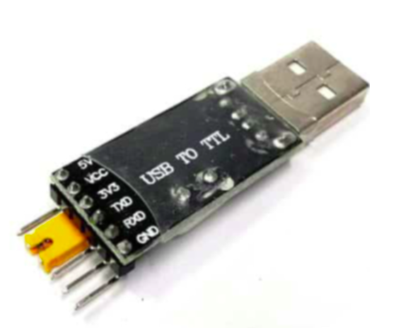
-
Converts USB from a computer to UART signals at logic level (“TTL” is a historic name).
-
The DevKit has one built in (CP2102/CH340): that is how
Serialreaches your laptop. -
An extra adapter on UART2 gives you a second serial port on the laptop, e.g. to log data while the Serial Monitor shows debug text.
Set the adapter to 3.3 V
Many adapters have a 5 V/3.3 V jumper. 5 V on the ESP32 RX pin can damage it.
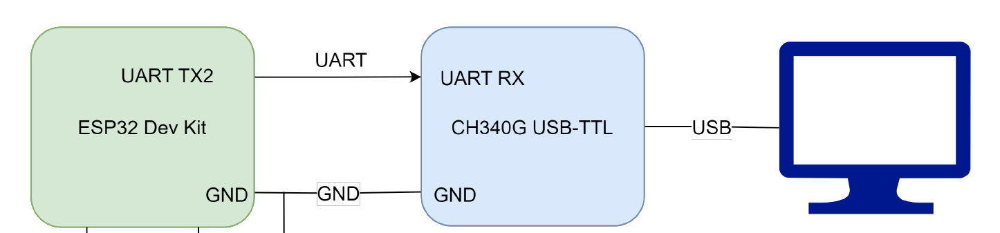
Sources: Figures: lectures 2 and 5 Embedded Programming, lectures 1–6
Example: two ESP32 boards talking¶
// Board A: sends the state of KEY1
void setup() {
pinMode(34, INPUT);
Serial2.begin(9600, SERIAL_8N1, 16, 17);
}
void loop() {
bool pressed = digitalRead(34);
Serial2.println(pressed ? "1" : "0");
delay(100);
}
// Board B: lights the blue LED
void setup() {
pinMode(23, OUTPUT);
Serial2.begin(9600, SERIAL_8N1, 16, 17);
}
void loop() {
if (Serial2.available()) {
String msg = Serial2.readStringUntil('\n');
msg.trim();
digitalWrite(23, msg == "1");
}
}
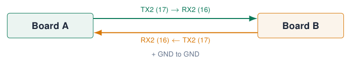
Sources: Lecture 1 content: interfacing with other microcontrollers Embedded Programming, lectures 1–6
Quiz: UART¶
-
The Serial Monitor shows strange characters. What do you check first?
Check your answer
The baud rate in the monitor vs.
Serial.begin(). -
Two boards are connected TX–TX and RX–RX. What happens?
Check your answer
Nothing arrives: both transmit on the same wire. Cross the lines: TX \(\rightarrow\) RX.
-
Why must both boards share GND?
Check your answer
A voltage is a difference: without a common reference the receiver cannot tell HIGH from LOW.
-
How long does it take to send 100 bytes at 9600 baud?
Check your answer
\(100 \times 10\) bits \(/ 9600 \approx 0.10\) s.
-
Why can you not use GPIO 1 and 3 for your own sensor?
Check your answer
They are UART0: upload and Serial Monitor go through them.
Exercises: UART¶
Exercise 1 – Command parser
Extend the command example: LED <n> ON/OFF for n = 1–4, STATUS prints all LED states, HELP lists the commands.
Exercise 2 – Remote dimmer
Board A sends its potentiometer value every 100 ms; board B sets the brightness of an LED (see PWM in the next chapter).
Exercise 3 – Two terminals
Connect a USB–TTL adapter to UART2. Send debug text to Serial and measurements in CSV format to Serial2; open both in two terminal programs.